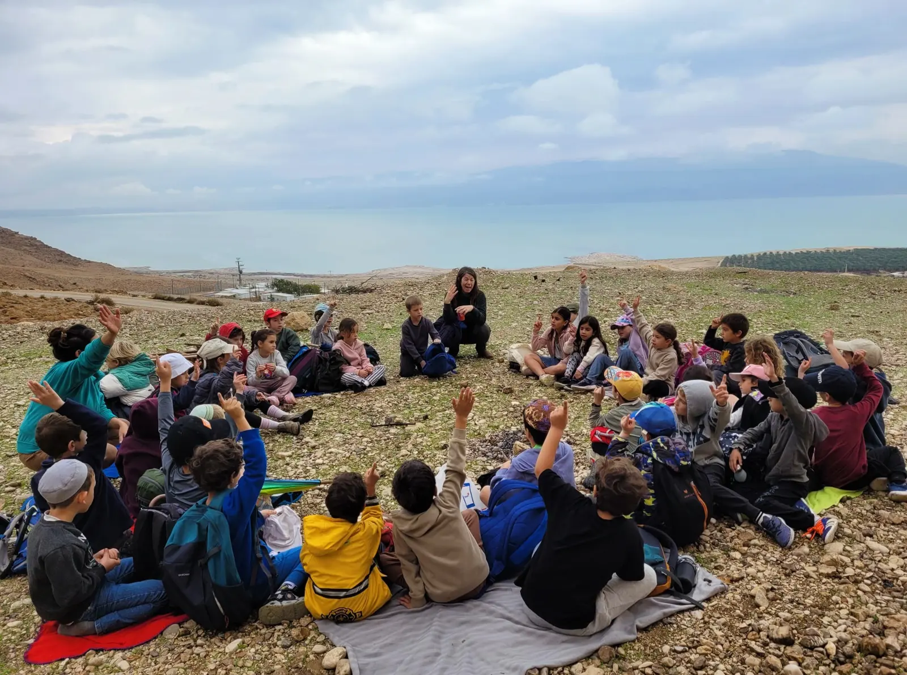
מחוברים לאדמה, פתוחים אל השמייםRooted in the earth, open to the sky
בית ספר ממ״ד קהילתי וסביבתי, שבו לומדים עם הידיים, עם הרגליים ועם הלב.A community and environmental religious state elementary school, where children learn with their hands, their feet and their hearts.
בית ספר שנולד מתוך קהילהA school born of a community
החיבור לאדמה כולל עבודה ממשית עם הידיים באדמת מדבר יהודה והיכרות דרך הרגליים עם סביבתנו. הפתיחות לשמיים כוונתה להעמיק בלימוד ולתת מקום לתורה, לרוח ולתפילה.Being rooted in the earth means real hands-on work in the soil of the Judean Desert and getting to know our surroundings on foot. Being open to the sky means deepening our learning and making room for Torah, spirit and prayer.
אדמה ומדברEarth & desert
יום מדבר שבועי, למידת חוץ, נטיעות, גינה ומערכת ביו־גז – הסביבה היא הכיתה.A weekly desert day, outdoor learning, planting, a garden and a biogas system – the landscape is our classroom.
תורה, רוח ותפילהTorah, spirit & prayer
לימוד חי ומעמיק, מסיבות סידור וחומש, מסע סליחות לפנות בוקר ושירה שמלווה את השבוע.Living, deep learning, Siddur and Chumash celebrations, a pre-dawn Selichot walk and songs that carry the week.
דיאלוג וקהילהDialogue & community
שפה של דיאלוג אמיתי בין מורים לתלמידים, למידה דרך אומנויות ואינטליגנציות שונות וקהילה לומדת של הורים.Real dialogue between teachers and students, learning through the arts and many intelligences, and a learning community of parents.
הילדים בונים, שותלים, חוקריםThe kids build, plant and explore
מעץ האבנים שנבנה ביום הראשון ועד מערכת הביו־גז שהופכת פסולת לגז בישול – כל פרויקט מתחיל בשאלה של ילדים ונגמר במשהו שאפשר לגעת בו.From the stone tree built on the very first day to a biogas system that turns food scraps into cooking gas – every project starts with a child's question and ends with something you can touch.
לכל הפרויקטים ←All projects →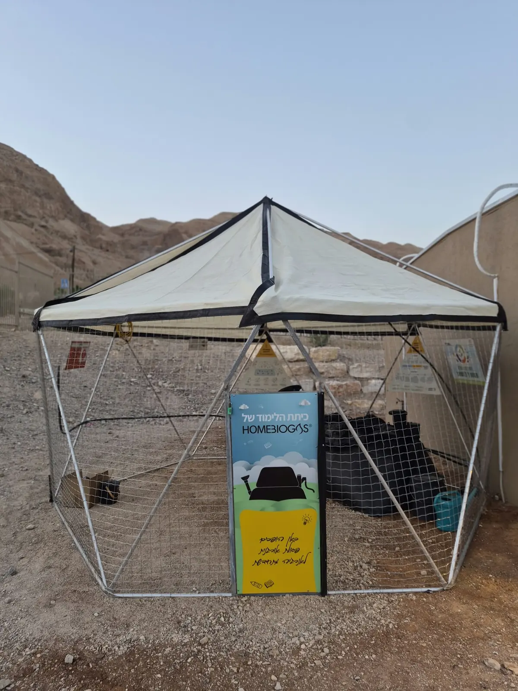
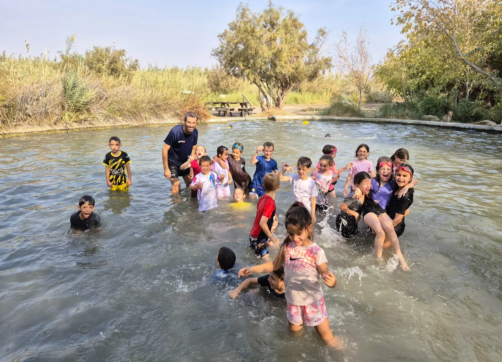
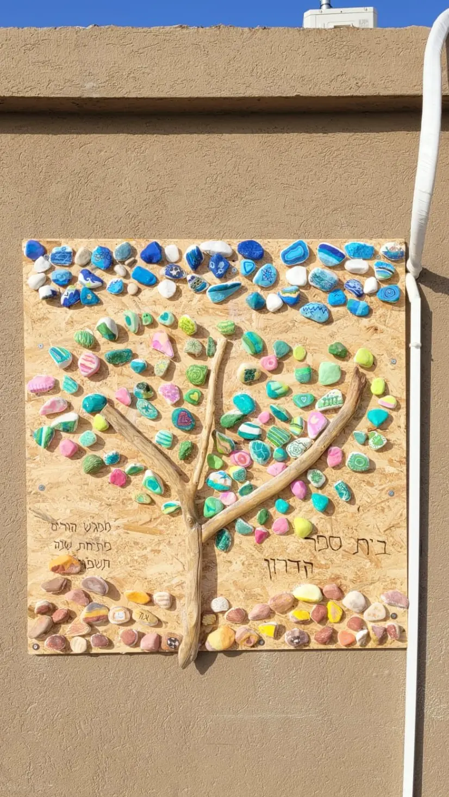
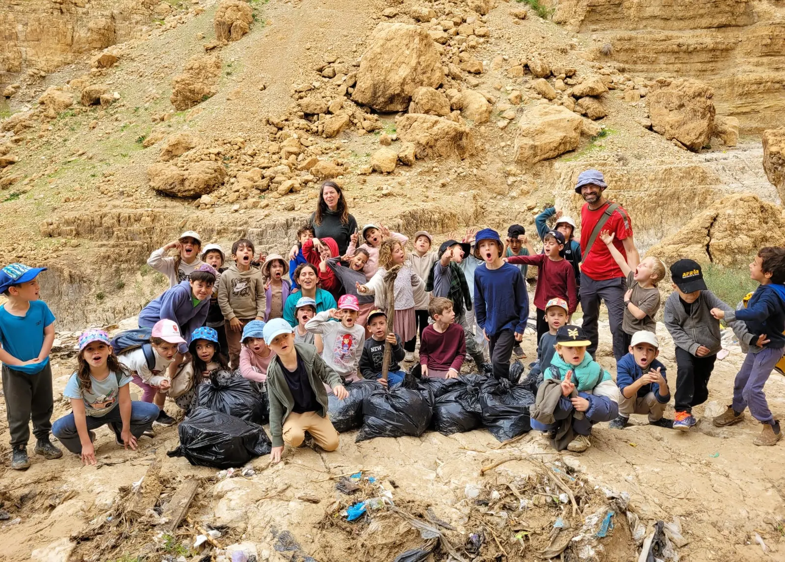
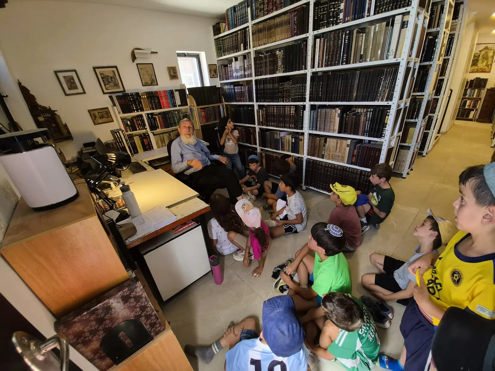
קול קדרוןKol Kidron
עלון בית הספר – יוצא לאור אחת לשבועיים, עם יצירות, סיפורים ותמונות מהכיתות.Our school newsletter – every two weeks, with the children's work, stories and photos.
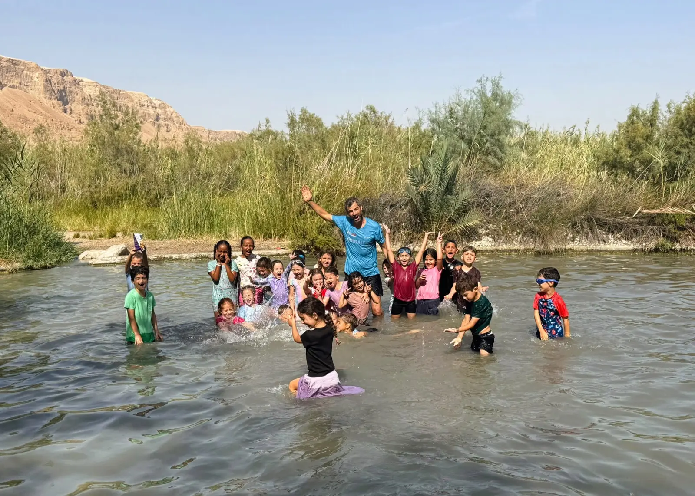
בית ספר צעיר, חלומות גדוליםA young school with big dreams
הצללה, גינה, מתקני משחק, חדר יצירה וספרייה – כל תרומה עוזרת לילדים שלנו ללמוד בתוך הנוף המופלא הזה. התרומות מוכרות לצורכי מס בישראל ובחו״ל.Shade, a garden, play equipment, a creative studio and a library – every gift helps our children learn inside this extraordinary landscape. Donations are tax-deductible in Israel and abroad.
מקום המחובר לאדמה ופתוח אל השמייםA place rooted in the earth and open to the sky
אנחנו מבקשים להיות מקום המחובר לאדמה ופתוח אל השמיים. החיבור לאדמה כולל עבודה ממשית עם הידיים באדמת מדבר יהודה בו אנחנו נמצאים והיכרות דרך הרגליים עם סביבתנו, והפתיחות לשמיים כוונתה להעמיק בלימוד ולתת מקום לתורה, לרוח ולתפילה.
אנחנו רוצים ליצור שפה חדשה של דיאלוג אמיתי בין מורים לתלמידים ובין הילדים לבין עצמם, ללמוד דרך אומנויות ואינטליגנציות שונות ולתת לתלמידים את הכלים הדרושים לגדול ולהתפתח כלומדים עצמאיים וכבני אדם חברתיים ומאמינים.
We want to be a place rooted in the earth and open to the sky. Being rooted in the earth means real, hands-on work in the soil of the Judean Desert where we live, and getting to know our surroundings on foot. Being open to the sky means deepening our learning and making room for Torah, spirit and prayer.
We want to create a new language of genuine dialogue between teachers and students, and among the children themselves; to learn through the arts and many kinds of intelligence; and to give our students the tools to grow into independent learners and into caring, believing members of a community.
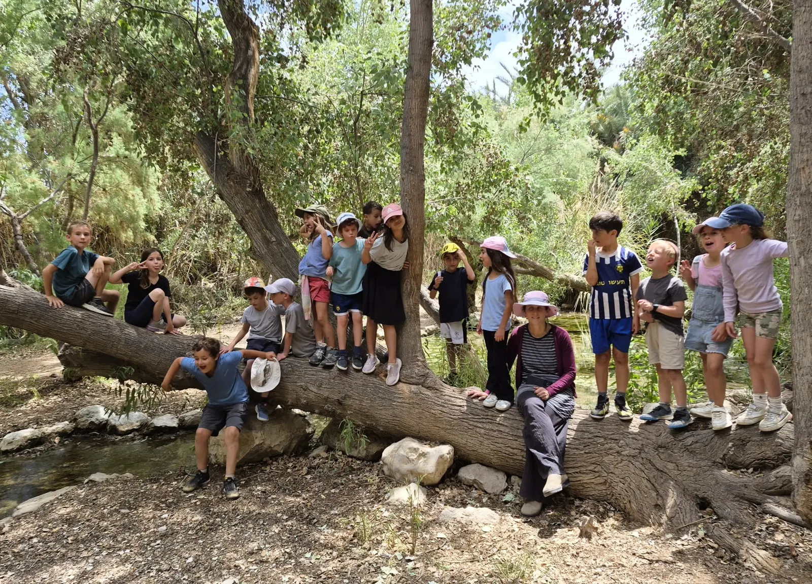
למה ״קדרון״?Why “Kidron”?
את השם בחרה הקהילה כולה בהצבעה בקיץ תשפ״ה. נחל קדרון יורד מירושלים אל ים המלח ועובר ממש לידנו. בשנים גשומות זרמו בו מים, והילדים השיטו עליו סירות נייר. האתגר שלנו הוא לגלות את האור החבוי בנחל – ואולי עוד נראה ילדים משיטים בו סירות.
The whole community chose the name in a vote in the summer of 2025. Nachal Kidron runs from Jerusalem down to the Dead Sea, right past us. In rainy years it once flowed, and children floated paper boats on it. Our challenge is to discover the light hidden in the stream – and maybe one day children will float boats on it again.
יום בקדרוןA day at Kidron
הסעות יוצאות כל בוקר מקדם ערבה דרך קליה לאבנת. יום רביעי הוא יום מדבר – למידת חוץ בנוף שסביבנו. בית הספר פועל במסגרת מועצה אזורית מגילות ים המלח ובפיקוח משרד החינוך.
Buses run each morning from Kedem Arava via Kalia to Ovnat. Wednesday is Desert Day – outdoor learning in the landscape around us. The school operates within the Megilot Dead Sea Regional Council under the Ministry of Education.
הפרויקטים שלנוOur projects
מה שהילדים, הצוות וההורים עושים בעצמם – למידה שיוצאת מהכיתה: לאדמה, לנחל, לקהילה ולעולם הרחב.What our kids, staff and parents do themselves – learning that leaves the classroom: into the soil, down the stream, out to the community and the wider world.
עזרו לנו לבנות את החלום הבאHelp us build what comes next
בית ספר צעיר במדבר צריך עוד הרבה: צל, גינה, מקום לשחק וליצור. בחרו פרויקט – כל תרומה מקרבת אותו.A young desert school still needs a lot: shade, a garden, places to play and create. Pick a project – every gift brings it closer.
רוצים לתרום לבית הספר באופן כללי? Prefer a general gift? לעמוד התרומותGo to the donation page
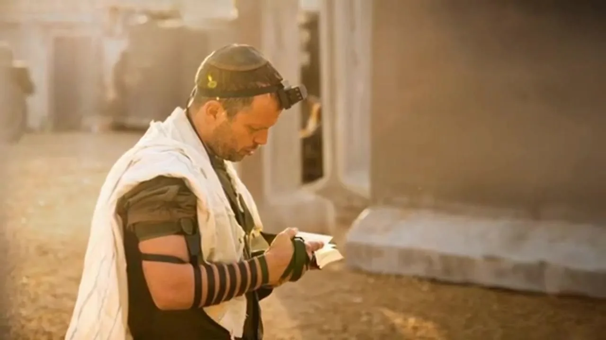
פינת עין טובה לזכר יובל ניר הי״דA Good Eye (“Ayin Tova”) Corner in memory of Yuval Nir HY”D
בונים יחד, בקדרון, מקום של חיים – שבו הילדים לומדים לראות את הטוב שבאחר ולומר אותו בקול.Together at Kidron, we’re building a living place – where children learn to see the good in others and say it out loud.
איש של עין טובהA man with a good eye (“Ayin Tova”)
רס״ב (מיל׳) יובל ניר הי״ד, בן 43 מכפר עציון, לוחם בגדוד הסיור 6646, נפל בקרב בח׳אן יונס בינואר 2024. הוא היה נשוי לאילה ואב לחמישה, גדל בקיבוץ מגדל עוז, ובכל בוקר בחמש ועשרים קבע ללמוד תורה. יובל הוא אחיה של ענת, תושבת אבנת, ודודו של תלמיד בקדרון.
Warrant Officer (res.) Yuval Nir HY”D, 43, of Kfar Etzion, a soldier in the 6646 Reconnaissance Battalion, fell in battle in Khan Younis in January 2024. He was married to Ayala and a father of five, grew up on Kibbutz Migdal Oz, and studied Torah every morning at 5:20. Yuval is the brother of Anat, an Ovnat resident, and the uncle of a Kidron student.
במילואים, כשמישהו כעס, יובל ביקש: ״עם ישראל צריך זכויות – עכשיו כל אחד יגיד זכות.״ מזה נולד מנהג משפחתי: בכל יום, בתורו, כל אחד מספר משהו טוב על אדם אחר. היום המשפחה ממשיכה את ״העין הטובה של יובל״, והוריו פועלים להכניס אותה לבתי ספר.
In the reserves, when someone was angry, Yuval would say: “The people of Israel need merits – now everyone say something good.” That became a family tradition: every day, in turn, someone shares something good about another person. Today his family carries on “Yuval’s Good Eye” (“Ayin Tova”), and his parents are working to bring it into schools.
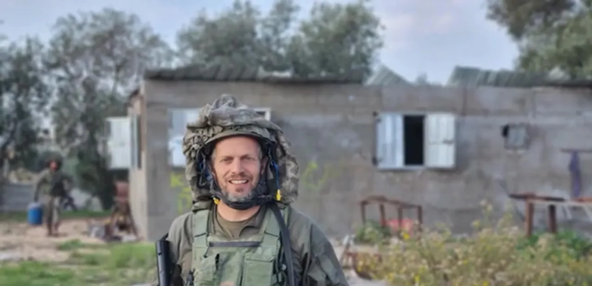
״זה לא להנציח מישהו – זה להמשיך אותו״“It’s not about commemorating someone – it’s about continuing him”
האחים של יובל מספרים על העין הטובה. באדיבות משפחת ניר.Yuval’s siblings on the good eye (“Ayin Tova”). English subtitles. Courtesy of the Nir family.
פינת הנצחה שהיא מקום של חייםA memorial that is a place of life
בחצר בית הספר נבנה פינת עין טובה. כל יום יתכנסו בה הילדים למעגלי עין טובה, שיעמיקו את השפה הזאת בבית הספר ויחברו בין דמותו של יובל לילדים שלומדים כאן היום.
In our school yard we’re building a Good Eye (“Ayin Tova”) Corner. Every day the children will gather there for good eye (“Ayin Tova”) circles, deepening this language in our school and connecting Yuval to the children who learn here today.
את הפינה נבנה יחד עם מיזם אבן הפינה – משפחת ניר, הילדים, ההורים והקהילה, בידיים. את אבן הפינה ייסד עדי אלוש ז״ל, לוחם צנחנים לשעבר ושכנו של מנהל בית הספר, שבנה פינות הנצחה עם משפחות הנופלים. עדי נהרג בתאונת דרכים בסרי לנקה, ומשפחתו ממשיכה את דרכו.
We’re building it with Even HaPina – the Nir family, our children, parents and community, by hand. Even HaPina was founded by the late Adi Alush, a former paratrooper and neighbor of our principal, who built memorial corners together with bereaved families. Adi was killed in a road accident in Sri Lanka, and his family carries on his work.
כל תרומה בונה את הפינהEvery gift builds the corner
התוכנית השנתיתOur year plan
מה לומדים בכל כיתה לאורך השנה – חגים, נושאי לימוד ואירועים מרכזיים.What each grade learns through the year – holidays, learning themes and key events.
לגדל בית ספר במדברHelp a school grow in the desert
קדרון קם בשנת 2025 בזכות קהילה שהאמינה בו. התרומה שלכם הופכת חלומות של ילדים לגינה, צל, ספרים ומקום ליצור.Kidron opened in 2025 because a community believed in it. Your gift turns children's dreams into a garden, shade, books and a place to create.
תורמים מישראלGiving from Israel
- קבלה מוכרת לפי סעיף 46Section 46 tax receipt
- תרומה חד־פעמית או חודשיתOne-time or monthly
- כרטיס אשראי / ביט / העברה בנקאיתCredit card, Bit or bank transfer
תורמים מחו״לGiving from abroad
- מוכר לצורכי מס בארה״ב (501(c)(3))US tax-deductible (501(c)(3))
- ניתן לסמן את התרומה לבית ספר קדרוןDesignate your gift to Kidron School
- דולרים, אירו, ליש״טUSD, EUR, GBP
מה התרומה מאפשרתWhat your gift makes possible
בחרו פרויקט ספציפי לתמוך בוChoose a specific project to support
[שם העמותה ומספר עמותה][Amuta name & registration number]
ממשיכים לצמוחWe're still growing
מחנכים, משפחות ומתנדבים שרוצים להיות חלק מבית ספר שנבנה מאפס – נשמח להכיר.Educators, families and volunteers who want to be part of a school built from the ground up – we'd love to meet you.
לצוותTeaching team
ייתכנו תמריצים למתאימים. פנו לאהרלה, מנהל בית הספר: 058-4081306Incentives may be available. Contact Aharale, the principal: 058-4081306
למשפחותFamilies
שוקלים להצטרף לקהילות מגילות ים המלח? בואו לבקר ולהכיר את בית הספר.Thinking of moving to the Megilot Dead Sea communities? Come visit and see the school.
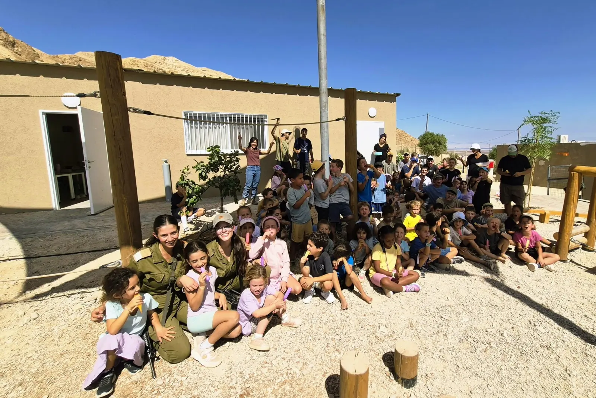
עדיף הודעה כתובה בווטסאפWritten WhatsApp messages preferred
info@kidronschool.org.il
הצהרת נגישותAccessibility statement
אנו פועלים להנגשת האתר בהתאם לתקן הישראלי 5568 ולהנחיות WCAG 2.1 ברמה AA. האתר תומך בניווט מקלדת, בקוראי מסך ובהגדלת טקסט. נתקלתם בבעיה? פנו למזכירות: 02-6487777.
We aim to meet Israeli Standard 5568 and WCAG 2.1 AA. The site supports keyboard navigation, screen readers and text zoom. Found a problem? Call the office: 02-6487777.
[תאריך עדכון ורכז/ת נגישות]